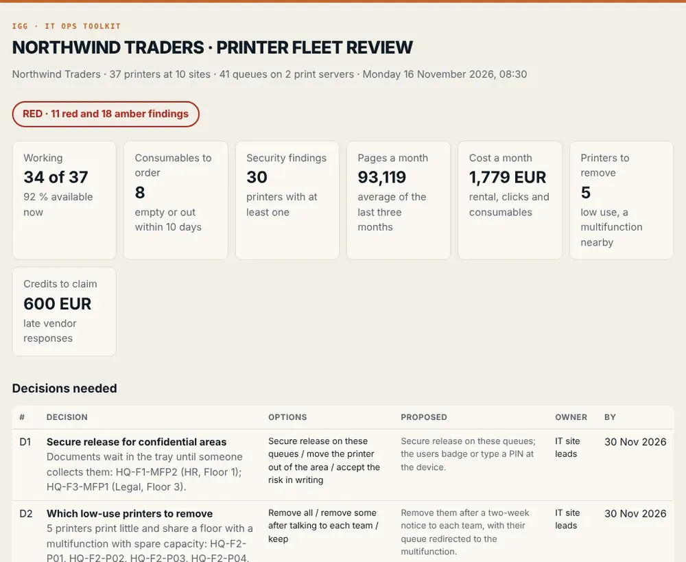

The four "printer offline" tickets a Barcelona store opened in three weeks had a single cause: after a power cut, the multifunction printer took a new address on the network and the print server queue kept sending jobs to the old one. That is what the monthly printer review published with this post finds. It is an open-source project that runs on sample data from a fictional home goods retailer with a head office in Madrid, a warehouse in Zaragoza and eight stores.
Every time the support team restarted the queue, jobs came out for a few hours and the ticket was closed. The tool compares the address each queue prints to with the address the device itself reports to the managed print portal, flags a mismatch in red and links it to the repeat tickets. That is the difference between closing tickets and fixing the problem: the proposed fix is to correct the queue port and reserve the printer's address on the DHCP server, the service that hands out addresses on the network.
Three empty consumables and a stuck delivery-note queue
The same review finds other faults that nobody sees until someone cannot print. In the warehouse, the queue for delivery notes has been stuck for 140 minutes behind 37 jobs. Three consumables are empty and not ordered, and five more will run out within ten days at last month's rate; for each one the report works out the last day to order it, allowing three days for delivery.
In all, 34 of the 37 printers are working on the day of the review, 92%. The report gives every finding an owner and a date: two days for the red ones and two weeks for the rest.
HR payslips in a corridor tray
On security, two multifunction printers in confidential areas, Human Resources and Legal, print without secure release, the feature that holds a document until its owner identifies at the device with a badge or a PIN. Two others still have the factory admin password, which lets anyone on the network change their settings or read their address book.
The review ends with five decisions for the site leads: turn on secure release in those two areas; remove five desk printers that print 40 to 120 pages a month next to a multifunction used at a quarter of its capacity; decide on three leases, one with its notice date this Saturday; switch off the old print server, which still shares six printers; and print in black and white by default.
How to use it with real data
The repository includes a PowerShell script that only reads the queues of the Windows print servers; the rest of the data comes from the managed print portal, the printer register and the ticketing tool. It runs on Python with no external dependencies and produces a web report, a one-page summary for the monthly meeting and CSV files with every finding and its action. The demo data is fictional: models, firmware, addresses, prices and tickets.
Where it comes from
The tool comes from supporting the printers of retail stores and taking part in store openings, running the IT of an office site with users across several offices, and managing hardware vendors, their contracts and their SLAs.
Want to bring it to your environment or adapt it to your case? Get in touch and we can look at it together.
Tech Career Lab · newsletter
Found this useful? Every two weeks I send one practical idea for IT professionals: LinkedIn, projects, networking and hiring processes.
Sign up and get the 33 ideas →